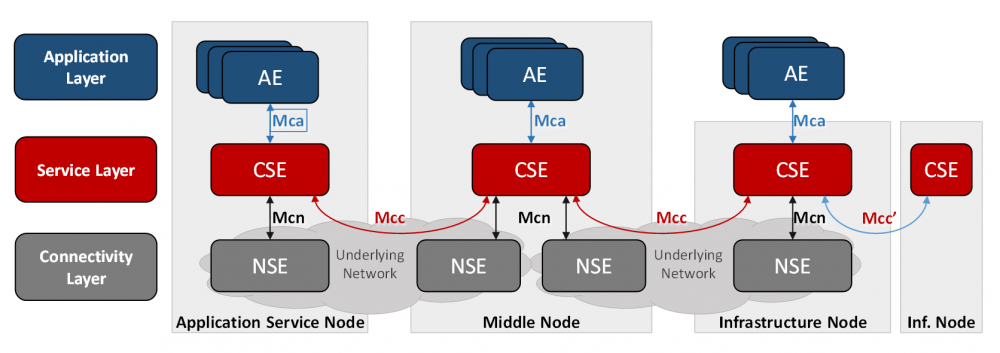

OneM2M COMO UM PADRÃO DE IoT
OneM2M:Como um padrão IoT, oneM2M é uma iniciativa de padrões globais para comunicação máquina a máquina e Internet das coisas.
O software de middleware fornece uma camada de serviço IoT arquitetônica padronizada pelo OneM2M, ou seja, entre o hardware de processamento / comunicação e os aplicativos IoT, fornecendo um conjunto rico de funções necessárias para muitos aplicativos IoT.
Descrição Arquitetônica funcional de OneM2M
OneM2M define uma arquitetura horizontal que fornece funções de serviço comuns que permitem aplicativos em vários domínios usando uma estrutura comum e APIs uniformes.O modelo oneM2M contém três camadas:
- camada de aplicação;
- Camada de serviços comuns;
- camada de serviços de rede principal.

A arquitetura funcional OneM2M inclui as seguintes Entidades:
Entidade de aplicação (AE):É Uma entidade que implementa uma lógica de serviço de aplicativo M2M na camada de aplicativo.
Entidade de serviços comuns (CSE):
Representa uma instância do conjunto de "funções de serviço comuns" do nível de serviço oneM2M.
Entidade de serviços de rede (NSE):
Fornece serviços da rede principal.
Conteudos
- MAS AFINAL, O QUE É A INTERNET DAS COISAS (IoT) ?
- HISTÓRIA DA INTERNET DAS COISAS
- INTERNET DAS COISAS: DIFERENTES VISÕES E CONCEITOS
- COMPONENTES DA INTERNET DAS COISAS
- AREAS DAS APLICAÇÕES EM INTERNET DAS COISAS
- VANTAGENS E DESVANTAGENS DA INTERNET DAS COISAS
- TECNOLOGIAS DE COMUNICAÇÃO E DE DESENVOLVIMENTO EM INTERNET DAS COISAS
- OneM2M COMO UM PADRÃO DE IoT
- ECLIPSE OM2M